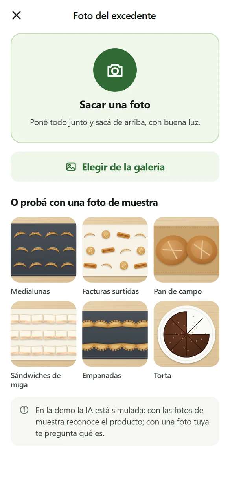

Captura
De la foto al pack publicado.
La foto del mostrador pasa por un modelo de visión que identifica el tipo de alimento y estima la cantidad. Con eso, la app propone cuántos packs se pueden armar, de qué tamaño, a qué precio y en qué franja de retiro. El empleado confirma o corrige.
Cada corrección humana es dato de entrenamiento: es la forma de que el reconocimiento mejore con el uso, empezando por un set acotado de categorías (panadería, sándwiches, viandas, pastelería) en vez de intentar reconocer cualquier comida desde el día uno.
- Hoy, en la demo: el reconocimiento está simulado. Con las fotos de muestra responde como respondería el modelo; con una foto propia, pregunta qué es.
- Lo próximo: probarlo con comida real de los comercios objetivo. Es el riesgo número uno del proyecto y todavía no está despejado.
